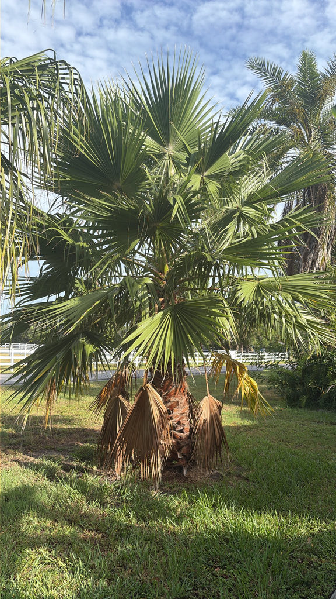

- This species turns desert ecology on its head. As the only palm native to the western United States, it bypasses the tropics entirely to root itself in the hyper-arid Mojave, Colorado, and Sonoran Deserts.
- Because it cannot survive on rainfall alone, a wild grove functions as a living hydrological map — a definitive beacon that a subterranean seep, spring, or fault-line fracture lies close underfoot.
- The species name filifera means 'thread-bearing' in Latin — a reference to the white filaments that dangle from between the leaf segments like loose threads on a hem. Look closely at the frond edges and you can see them.
- A mature California fan palm can produce thousands of small fruits in a single season. Coyotes are among the most effective dispersers: seeds pass through their digestive systems intact and germinate at a measurably higher rate than seeds that fall straight to the ground.
- Its famous, shaggy petticoat of dead fronds is a masterclass in evolutionary self-defense. Rather than shedding old leaves, this palm retains them as a dense, insulating jacket that buffers the trunk against blistering desert days and freezing winter nights.
- In an environment shaped by wildfires, this thatch functions like a thermal shield — burning through rapidly and exhausting the fuel source before the structural core of the trunk can ignite.
The California fan palm is native to a narrow band of desert in southern California, southwestern Arizona, and the adjacent corner of Baja California and Sonora, Mexico — the only palm with a natural range entirely within the western United States. It is the largest native palm on the North American continent.
Unlike most palms, it is a creature of the desert, not the tropics. Wild groves cluster around perennial springs, fault-line seeps, and canyon streambeds in the Colorado, Mojave, and Sonoran Deserts — places where groundwater reaches the surface. Iconic oases like the Thousand Palms Oasis in the Coachella Valley and the palm canyons of Anza-Borrego are built entirely around this one species.
It arrived in Florida cultivation as a drought-tolerant ornamental and is occasionally planted in well-drained landscapes across the state. UF/IFAS notes, however, that it is better suited to the drier climates of California, Arizona, and Texas than to Florida's wet summers, and that overwatering or poorly drained soils can initiate root rot.
- The persistent skirt of dead fronds — sometimes reaching all the way to the ground on untrimmed specimens — gives this palm its most colorful nickname: the petticoat palm. The thatch is more than decoration. It insulates the trunk against cold, may contribute to fire resistance, and provides nesting and roosting habitat for birds and bats.
- UF/IFAS notes that in some municipalities the skirt must be removed by law because it can become a fire hazard and a roost for rodents.
- The genus Washingtonia contains just two species, both native to the desert Southwest: W. filifera (this palm, stout and relatively short) and W. robusta, the Mexican fan palm (taller, with a slender tapering trunk and brighter green leaves). The two can hybridize where they grow in proximity, and the resulting hybrid — sometimes appearing in nursery stock — blurs the differences between them.
- A useful field distinction: W. filifera has a noticeably thicker, more columnar trunk and gray-green leaves, while W. robusta is much taller and more slender.
- California fan palm oases have been human habitation sites for more than ten thousand years. The Cahuilla, Serrano, and related peoples of the desert Southwest relied on this palm for food, shelter, and materials.
- The small, sweet fruits were eaten fresh, dried for storage, or ground into flour; the leaves were used for thatching, basketry, and sandals; and the woody petioles were shaped into cooking utensils. Some ethnobotanists believe the current distribution of wild groves partly reflects ancient human planting and tending, not just natural dispersal.
In its native desert range, the California fan palm is a keystone species — the structural anchor of oasis ecosystems that would otherwise have almost no large woody plants. The inflorescences, which can reach 15 feet in length, attract numerous insects when in bloom.
The small black fruits are eaten by birds, gray foxes, and coyotes, all of which disperse the seeds; coyote digestion actually improves germination rates significantly.
The palm's relationship with the Hooded Oriole is one of the best-documented bird-plant partnerships in western North America. Hooded Orioles use fibers unraveling from older fronds as nesting material, weaving them into pendulous nests that hang directly from the leaf blades — sometimes literally sewing the nest to the frond by pushing fibers through punctures in the leaf.
The species expanded its range northward as ornamental palms were planted in suburban areas, earning it the nickname 'palm-leaf oriole.' The persistent dead-frond skirt also provides daytime roosting habitat for the western yellow bat.
In Florida, where these desert specialists are absent, the wildlife value of this palm is more modest, though the fruit and shelter it offers are accessible to generalist birds.
Inflorescences are spectacular in scale — branching sprays up to 15 feet long that arch out from between the leaf bases in late spring to early summer. Individual flowers are small and creamy white. The palm is monoecious, meaning male and female flowers occur on the same plant, so a single tree can set fruit without a nearby partner.
Small, round to egg-shaped black drupes roughly pea-sized — about a quarter to half an inch in diameter — containing a single hard seed surrounded by a thin layer of sweet, edible pulp. Fruits ripen in fall and are eaten and dispersed by birds, coyotes, and foxes.
Palmate (fan-shaped), gray-green, and 3 to 6 feet wide, divided nearly to the middle into many stiff segments. Characteristic white threads dangle from between the segments — the 'filifera' of the species name. Dead fronds bend downward against the trunk rather than dropping off, accumulating into the dense skirt the palm is known for. Petioles are stout and armed with curved marginal teeth.
Solitary, columnar, and notably stout — up to about 3 feet in diameter — gray-brown, and roughened by the bases of shed fronds. On trimmed specimens the trunk shows a crosshatched pattern of old attachment scars. The trunk does not taper the way the related Mexican fan palm does; it stays thick from base to crown.
Approach this specimen with a two-step diagnostic mission to separate a true desert giant from the common Mexican fan palm (Washingtonia robusta). First, track the trunk from base to canopy: a California fan palm is defined by its massive, columnar girth — maintaining a thick, heavy cylinder without the dramatic, slender tapering seen in its Mexican relative.
Second, isolate a single frond against the sky and scan its margins: look for the namesake filifera signature — a fringe of fine, unraveling white filaments that dangle from between the gray-green leaf segments like loose threads on a torn hem. On a breezy day they move like fringe.
The persistent dead-frond skirt, if left intact, is a habitat in itself — birds roost and nest inside it, and the hanging clusters of tiny black drupes in fall are easy to spot against the gray-green canopy.
The petioles carry curved marginal teeth that can scratch or cut — worth keeping in mind around the lower fronds. The small black fruits are edible and were a documented food source for Indigenous peoples of the desert Southwest; the sweet pulp can be eaten fresh, though the seed is hard and most of the fruit's bulk is seed rather than flesh. No known toxicity to people or dogs.
UF/IFAS recommends this palm primarily for drier climates — Texas, Arizona, California — rather than Florida, noting that overwatering and Florida's rainy season can initiate root rot. The specimen here is an established tree worth seeing for its architectural presence, but it is not a palm the park would recommend for new plantings in the wet Gulf Coast landscape.
Do not confuse this palm with the Mexican fan palm (Washingtonia robusta), which is far more commonly planted in Florida and throughout the South. The California fan palm is shorter, stockier, and has a noticeably thicker trunk that does not taper toward the top — once you see them side by side, the difference is clear.


- © Ruby Meador (CC-BY-NC), via iNaturalist